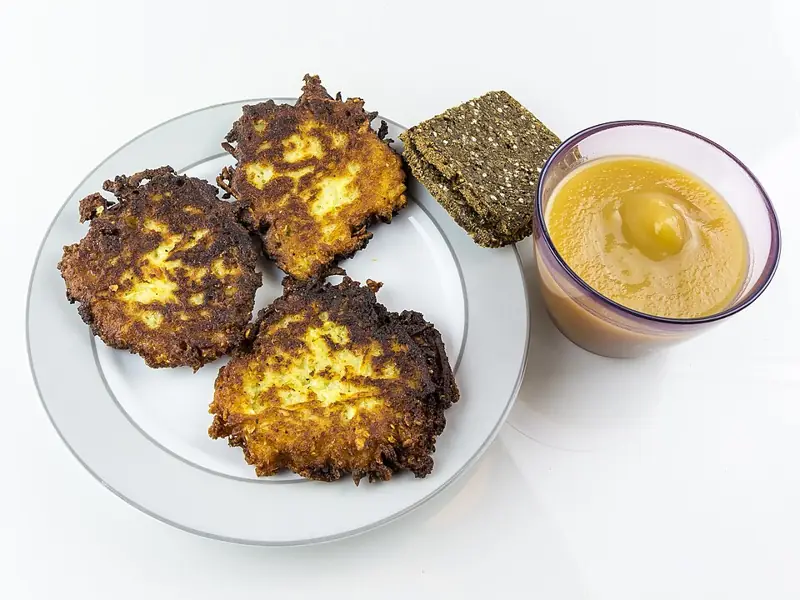

Фото: Raimond Spekking, CC BY-SA 4.0

Драники
Картофельные оладьи с хрустящей корочкой из тёртого сырого картофеля
40 мин4 порц.445 ккал на порциюБ 8 · Ж 23 · У 52Украинская кухня
Продукты на 4 порц.
- Картофель8 шт
- Лук репчатый1 шт
- Яйцо куриное1 шт
- Мука пшеничная2 ст. л.
- Соль1,5 ч. л.
- Перец чёрный молотыйпо вкусу
- Растительное масло5 ст. л.
- Сметана 20% по желаниюпо вкусу
Как готовить
- Очистите картофель и лук, натрите на мелкой тёрке. Лук трите вместе с картофелем, так масса меньше темнеет.
- Откиньте массу на сито и слегка отожмите лишний сок.
- Добавьте яйцо, муку, соль и перец, быстро перемешайте.
- Разогрейте масло на сковороде на среднем огне. Выкладывайте массу ложкой, разравнивая в лепёшки толщиной около 1 см.
- Жарьте по 3-4 минуты с каждой стороны до тёмно-золотистой корочки.
- Выложите на бумажное полотенце. Подавайте горячими со сметаной.
Совет. Жарьте сразу после натирания, иначе картофель потемнеет. Если середина сырая, убавьте огонь и накройте сковороду крышкой на 2 минуты.